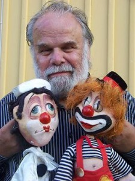
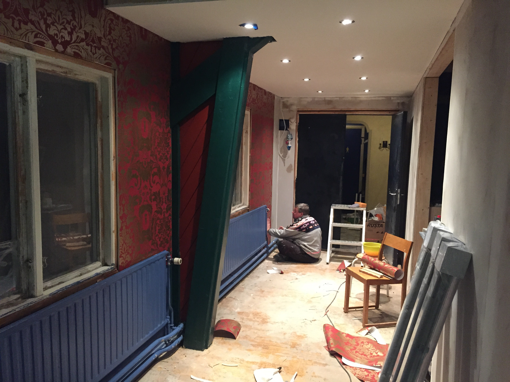
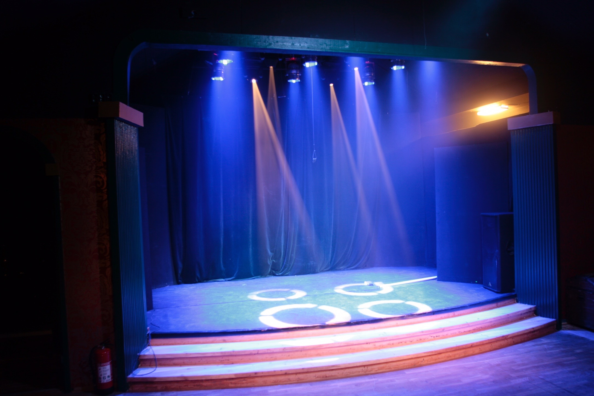

Historia på Buratino
Natalia och Alf Mouwitz startade Dockteater Buratino 1987. De första åren turnerade dom från Pajala i norr till Spanien i söder. Duon spelade enligt den ryska traditionen med meterstora stavdockor och marionettdockor.
Det händer grejer!
Under tiden som vi rev i ena änden av fastigheten byggdes det i andra. på två månader och 16 timmar om dagen hann vi med att bygga en gradäng, köpa in biostolar, sätta in ljud och ljus för ett mindre Scandinavium.
Teater Buratino!
Vi är både glada och stola över att kunna säga ”vi har Teater Buratino i Munkebäck”. Varje dag, varje timme händer det något nytt. Antingen är det någon som har sitt evenemang där eller så renoverar vi. Detta är vår never ending story…